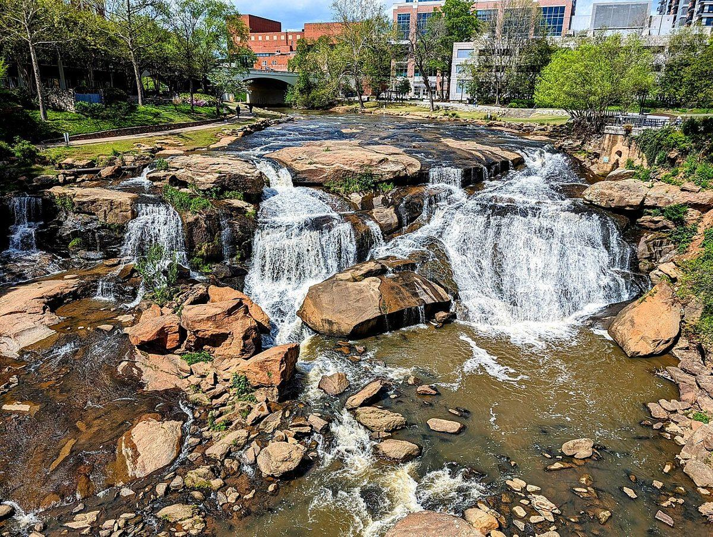

Sunday · Arrive and check in
Allow 3½–4 hours driving from Charleston, plus breaks. Choose dinner near the hotel if arrival runs late.
SOUTH CAROLINA · NIGHT ONE
An easy first landing after the late Charleston departure. Sleep here, then use Monday morning for a little riverside time before heading toward the mountains.
THE FEEL OF THE PLACE
Greenville makes the first night feel like a destination without adding a mountain drive after dark. The Reedy River and Falls Park bring water and greenery into a compact downtown; dinner can be casual and the prettier walk can wait until Monday morning. Sunday arrival is late, so prioritize a kitchen that stays open over an ambitious restaurant reservation.

Representative photograph from the linked archive; seasons and current conditions will differ.
A SUGGESTED RHYTHM
Allow 3½–4 hours driving from Charleston, plus breaks. Choose dinner near the hotel if arrival runs late.
Budget 30–60 minutes for the riverside paths and Liberty Bridge area. Park admission is free; parking may cost. Keep this brief enough to preserve daylight for Brevard and Looking Glass Falls.
Greenville to Brevard is approximately 1¼ hours before stops. The full day through Looking Glass Falls to Asheville needs roughly 2½–3½ hours of driving, plus visits.
EAT WELL, KEEP IT SIMPLE
Casual choices for this stop, with restaurant information and independent reviews or local guides to help you choose. Published prices exclude extras unless noted; recheck hours before setting off.
Burgers and pub food in a relaxed neighborhood setting at 300 East Stone Avenue. A covered patio and informal atmosphere suit an easy first night; this is the more forgiving late-arrival choice.
Budget: Official Greenville menu lists a small smash burger with fries or tots at $11, before tax and tip; larger meals cost more.
When to go: Official opening hours Sunday 11am–midnight; kitchen last orders not separately stated, so check if arriving late.
Smoked meat and Southern sides at 214 Rutherford Street. Choose this if you skipped barbecue in Charleston; share sides and order restrained portions to avoid an expensive meat feast.
Budget: Casual moderate-price option; buy meat by weight and compare the current menu.
When to go: Sunday 11am–9pm officially. Arrive before closing; individual meats may sell out.
CHECK BEFORE YOU GO
Road and trail conditions can change with weather and repairs. Driving and visit durations are planning allowances, not live navigation. Recheck opening hours and dated events shortly before travel.